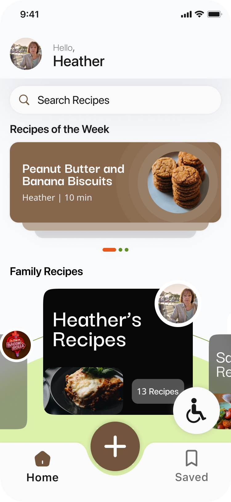

Recipe Sharing




This project addressed the challenge of maintaining family connections across generations. We aimed to develop a digital service that helped grandparents share family recipes in accessible formats, allowing grandchildren to learn, cook, and build deeper relationships. The goal was to strengthen emotional bonds and preserve cultural traditions in a meaningful, interactive way.


This prototype showcases the initial concept for the recipe-sharing mobile application. It features a minimalist design with simple colours. The main purpose of this prototype was to test functionality and identify areas for improvement to help us refine and develop a polished final version.
We used a decision matrix to select our final design, focusing on engagement and feasibility. Our research showed that generational gaps often come from a lack of shared interests, so we prioritized creating an engaging, shared experience. Feasibility was also crucial to meet our project timeline. We were inspired by Nainai’s Recipe, a 3D cooking game that connects players through family recipes. While this concept aligned well with our goal of connecting generations through food, we recognized that 3D animation was beyond our team’s capabilities and timeline.
The design system uses a warm, earthy colour palette with brown (#86674B) buttons placed on soft off-white (#F9FAFC) backgrounds, supported by soft green accents (#DCF1AA) and vibrant orange-red highlights (#E8571B). Bright orange (#FFAD3A) is used for playful and secondary highlights, while black (#000000) is used for text and also to add colour and depth to certain elements within the mobile application. Typography blends SF Pro Display and Darker Grotesque to create variety and visual interest. The primary title style uses SF Pro Display Semibold at 35px, while secondary titles use Darker Grotesque Bold at 24px. Body text is set in SF Pro Display Semibold at 15px, 18px, 20px, and 22px, depending on the section and visual hierarchy. This combination of colours, typefaces, and sizing builds a cohesive, accessible, and engaging visual language across the design.
SF Pro Display Semibold 35px
Darker Grotesque Bold 24px
Body Text
SF Pro Display Semibold 15px, 18px, 20px, 22px
We successfully enhanced both the appearance and functionality of the homepage. In addition, we introduced accessibility features to the mobile application and made significant improvements to its navigation.
Communication challenges sometimes led to misalignment and delays, as information wasn’t always shared clearly or on time. Establishing clearer expectations, regular check-ins, and faster feedback loops could have improved collaboration and helped the team stay more connected throughout the process.